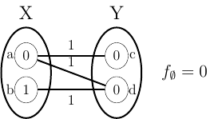

|  | toulbar2An exact solver for cost function networks |
toulbar2 is an open-source C++ solver for cost function networks. It solves various combinatorial optimization problems.
The constraints and objective function are factorized in local functions on discrete variables. Each function returns a cost (a finite positive integer) for any assignment of its variables. Constraints are represented as functions with costs in {0,∞} where ∞ is a large integer representing forbidden assignments. toulbar2 looks for a non-forbidden assignment of all variables that minimizes the sum of all functions.
Its engine uses a hybrid best-first branch-and-bound algorithm exploiting soft arc consistencies. See Publications.
toulbar2 won several competitions on Max-CSP (CPAI08) and probabilistic graphical models (UAI 2008, 2010, 2014 MAP task).
toulbar2 was originally developped by Toulouse (INRA MIAT) and Barcelona (UPC, IIIA-CSIC) teams, hence the name of the solver. Additional global cost functions were provided by the Chinese University of Hong Kong and Caen University (GREYC). It also includes codes from Marseille University (LSIS, tree decomposition heuristics) and Ecole des Ponts ParisTech (CERMICS/LIGM, INCOP local search solver).
A Python interface is available in NumberJack (Insight - University College Cork). A portfolio approach dedicated to UAI format instances is available here.
toulbar2 is currently maintained by Simon de Givry and hosted on mulcyber.toulouse.inra.fr.
Multi-Language Evaluation of Exact Solvers in Graphical Model Discrete Optimization
Barry Hurley, Barry O'Sullivan, David Allouche, George Katsirelos, Thomas Schiex, Matthias Zytnicki, Simon de Givry
Constraints, 21(3):413-434, 2016
Tractability-preserving Transformations of Global Cost Functions
David Allouche, Christian Bessiere, Patrice Boizumault, Simon de Givry, Patricia Gutierrez, Jimmy HM. Lee, Ka Lun Leung, Samir Loudni, Jean-Philippe Métivier, Thomas Schiex, Yi Wu
Artificial Intelligence, 238:166-189, 2016
Soft arc consistency revisited
Martin Cooper, Simon de Givry, Marti Sanchez, Thomas Schiex, Matthias Zytnicki, and Thomas Werner
Artificial Intelligence, 174(7-8):449-478, 2010
toulbar2 has been partly funded by the French Agence Nationale de la Recherche (projects STAL-DEC-OPT from 2006 to 2008 and ANR-10-BLA-0214 Ficolofo from 2011 to 2014) and a PHC PROCORE project number 28680VH (from 2013 to 2015).